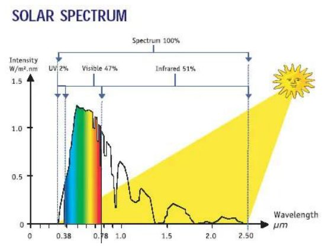
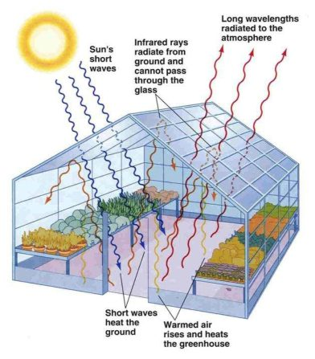
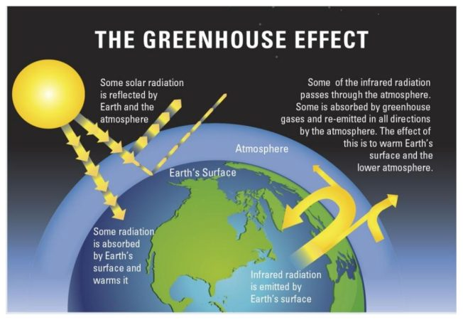
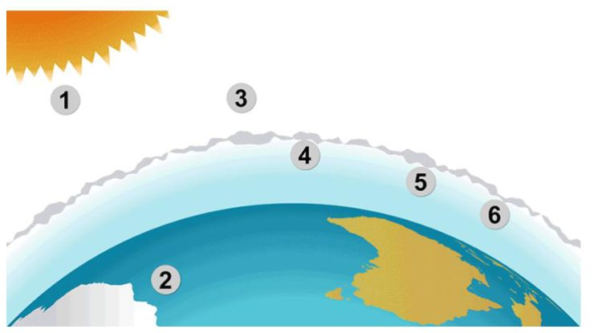
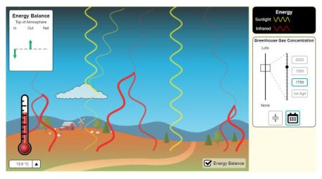

1.1 Energy balance and radiation
The Earth maintains an energy balance between incoming solar radiation and outgoing radiation back into space. However, not all radiation is the same.
- Energy arrives from the Sun as a mix of short-wave radiation (ultraviolet and visible light) and long-wave radiation (infrared heat).
- To keep the overall energy balance, the Earth emits long-wave (infrared) radiation back into space.

- To maintain the energy balance, the Earth emits long-wave radiation back into space.
- is the electromagnetic radiation that can burn our skin.
- (ROYGBV) is seen by our eyes.
- is felt as heat.
Gases in the Earth's atmosphere
Earth's atmosphere is almost entirely nitrogen (N2) and oxygen (O2), about 99%. Living organisms need oxygen for respiration, and nitrogen is crucial for plant growth. Nitrogen and oxygen have no effect on the radiation coming from the Sun or the radiation emitted by the Earth's surface.
Of the remaining 1%, some gases act as greenhouse gases (GHG). Carbon dioxide and other gases with three or more atoms in each molecule behave differently. They let short-wave radiation pass through, but can absorb and re-emit long-wave infrared radiation. Water vapour (H2O) can also act as a greenhouse gas.
Earth's atmosphere is almost entirely nitrogen and oxygen: about %.
Greenhouse gases have atoms in each molecule. They allow -wave radiation to pass through, but absorb and re-emit -wave infrared radiation.
Give the formula of each gas and whether it is a greenhouse gas.
| Gas | % | Formula | GHG? |
|---|---|---|---|
| Nitrogen | 78.1% | N2 | No |
| Oxygen | 20.9% | ||
| Argon | 0.9% | ||
| Carbon dioxide | 0.04% | ||
| Neon | 0.002% | Ne | No |
| Helium | 0.0005% | ||
| Methane | 0.0002% |
Carbon dioxide (3 atoms) and methane (5 atoms) are greenhouse gases. O2 and N2 have only two atoms, and the noble gases (Ar, Ne, He) exist as single atoms.
The greenhouse effect
Gardeners have long understood the benefits of a greenhouse. The glass traps some infrared radiation, keeping plants warmer in cold conditions, so seeds germinate and seedlings survive more readily.

In a similar way, the greenhouse gases in the atmosphere stop the Earth from becoming too cold, especially at night. They absorb and re-emit some infrared radiation back to the Earth's surface, keeping us warm. Without this effect, the Earth's average temperature would be about −18°C instead of 15°C.

The enhanced greenhouse effect
Because of increased levels of greenhouse gases in the atmosphere, the Earth has been experiencing an enhanced greenhouse effect.

Match each step number in the diagram with its description.
Enhanced greenhouse effect simulator
Use the PhET simulator to answer the questions below: https://phet.colorado.edu/sims/html/greenhouse-effect/latest/greenhouse-effect_all.html
Settings: select wave mode on the first screen, show the energy balance, and leave clouds on.

How has the amount of greenhouse gas changed since the last Ice Age?
The concentration of greenhouse gases has increased.
As the amount of GHG increases, describe the effect on the incoming solar radiation (yellow).
There is no effect: the incoming solar radiation stays constant.
As the amount of GHG increases, describe the effect on the mix of outgoing and reflected infrared radiation (red).
The intensity of radiation emitted by the surface increases, and a greater proportion is absorbed and re-emitted by GHG back towards the surface. The total outgoing radiation to space eventually stays the same (as shown by the energy balance graph).
As the amount of GHG increases, describe the effect on the overall surface temperature.
The surface temperature increases.
As the amount of GHG increases, describe the effect on the energy balance.
At first, outgoing radiation drops, so more energy comes in than goes out. As the surface temperature gradually increases, the outgoing radiation rises again until the net energy balance returns to zero (incoming = outgoing) at a new, higher temperature.
Section 1.1: Key summary questions
What are the key types of radiation in solar energy?
In order of increasing wavelength: ultraviolet, visible and infrared.
Describe the difference between long-wave and short-wave radiation.
The difference is their wavelength. Long-wave (infrared) radiation is readily absorbed and re-emitted by greenhouse gases, while short-wave radiation (UV and visible) passes through them. Oxygen and nitrogen are transparent to both.
What are the most common gases in the Earth's atmosphere?
Nitrogen (about 78%) and oxygen (about 21%).
What is the difference between the structure of a greenhouse gas and a non-greenhouse gas?
Greenhouse gases have three or more atoms per molecule (e.g. carbon dioxide, CO2). Non-greenhouse gases such as N2 and O2 have only one or two.
What are the key characteristics of a GHG?
A GHG can absorb (and re-emit) long-wave infrared radiation, but lets short-wave radiation pass through.
How does a garden greenhouse improve the growth of seedlings?
The glass traps some infrared radiation, keeping the plants warmer during cold conditions, so seeds germinate and seedlings survive more readily.
What type of radiation is trapped inside a greenhouse?
What would Earth's climate be like without the greenhouse effect?
Much colder overall (an average of about −18°C instead of 15°C), and with extreme swings in temperature: hotter during the day and much colder at night.
Compare the total amount of incoming solar radiation with the amount emitted as long-wave radiation into space.
They are the same (the Earth is in energy balance).
What type of radiation is emitted by the Earth's surface?
What has been the effect of increasing the amount of greenhouse gases in the atmosphere since the last Ice Age?
The Earth's surface temperature has increased.